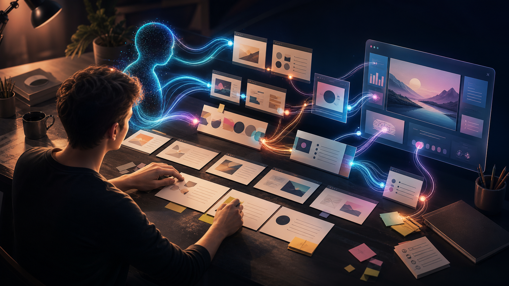
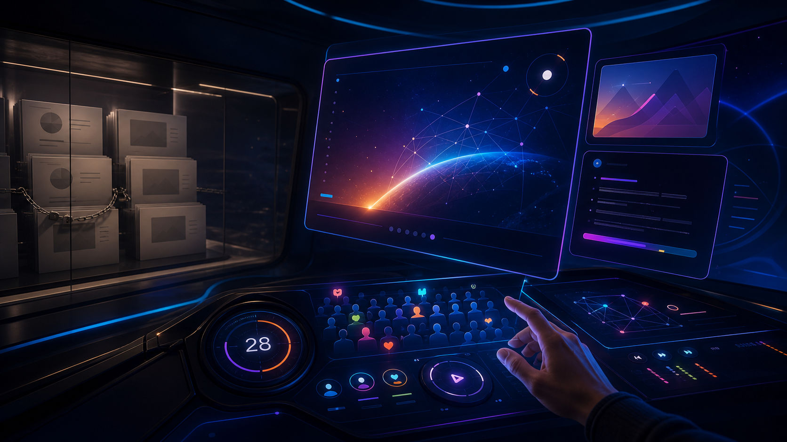

01 / the split screen
One behaves like a polished document. The other behaves like a living interface. AI gets dramatically more useful when the deck becomes readable, editable source.
02 / static file vs live system
Great for hand editing, direct manipulation, familiar delivery, and one-off meetings.
Great for themes, reusable components, automation, interaction, version history, and AI-assisted editing.

03 / try the difference

04 / ai workflow
Audience, goal, time, and the one thing they should believe.
Turn topics into slide titles that make complete arguments.
Use a template system so visual rules stay consistent.
Add speaker notes that sound human, not like a report summary.
Find the awkward moments, then let AI help revise the flow.
05 / takeaway
Fast editing, easy handoff, linear storytelling, and a format everyone recognizes.
Reusable systems, interaction, automation, versioning, and AI-readable source.
Let it structure, draft, review, and rewrite. Keep human judgment in charge.
The future of presentations is not just prettier slides. It is better thinking, better systems, and better live delivery.